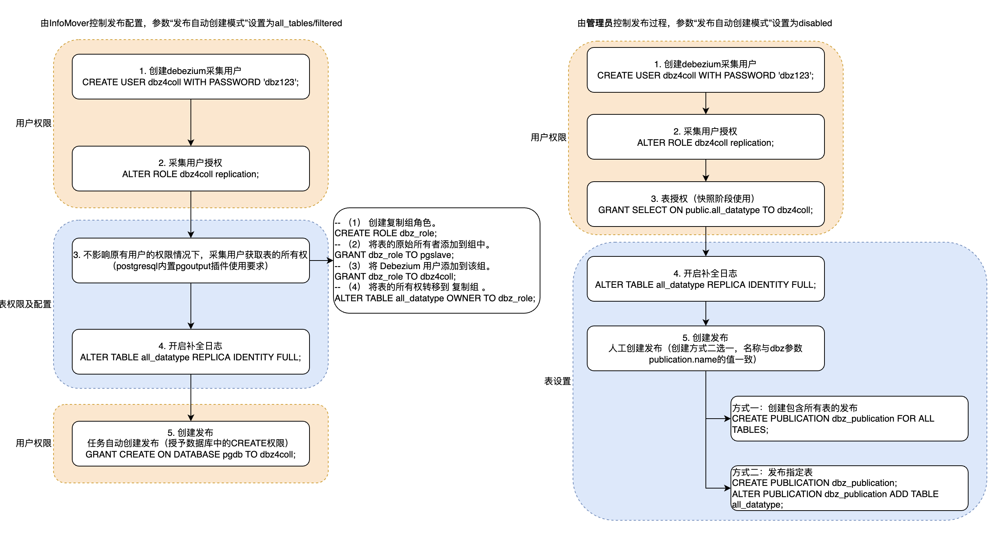

# 源端数据库对接说明
# Oracle相关内容
# 开启源端数据库对接实时采集模块的条件
Debezium通过使用Oracle 的Logminer达到CDC的目标，因此开启Oracle的这项工具尤为必要。
# Debezium对接Oracle的实时采集数据（会话）的步骤
- 启用补充日志（Supplemental Logging）
- 获取LogMiner数据字典信息
- 指定当前在线重做日志（Online Redo Log），用于分析日志信息和下文判断Redo Log是否切换。（缺全量数据获取的机制后续补充）
- 开启循环获取数据流程
- 获取并确定最新EndSCN
- 是否发生redo log切换，如果切换则重启logMiner会话
- 开启logMiner分析器
- 通过查询logMiner 的动态视图，收集开始和结束SCN区间的结果集
- 结束logMiner分析
- 记录本次会话的EndSCN
# 涉及到Oracle自身软件的说明
- Oracle LogMiner是Oracle数据库的一部分，它允许用户通过SQL接口查询在线和归档重做日志文件（Online/Archive Redo log files）。重做日志文件包含关于数据库活动历史的信息。
- 必须为捕获的表或数据库启用补充日志（supplement log）记录，以方便数据更改的同时可以捕获已更改的数据库数据行（SCN）之前的状态。
# 开启Oracle logminer的流程
# 开启归档模式（Oracle数据库管理员）
| #设置Oracle SID 或者Service Name，登录Oracle交互工具SQLPlus ORACLE_SID=ORACLCDB dbz_oracle sqlplus /nolog #以最高系统管理员身份，开启数据库归档模式 CONNECT sys/top_secret AS SYSDBA #验证归档是否开启，返回结果“Database log mode”显示值为“No Archive Mode”说明未开启归档模式 archive log list; ------结果------- Database log mode No Archive Mode Automatic archival Disabled Archive destination USE_DB_RECOVERY_FILE_DEST Oldest online log sequence 4 Current log sequence 6 ------结果------- #调整归档日志保存的容量和位置，注：目录以单机本地 alter system set db_recovery_file_dest_size = 10G; alter system set db_recovery_file_dest = '/opt/oracle/oradata/recovery_area' scope=spfile; #重启数据库，并开启归档模式。返回结果Database log mode: Archive Mode 则说明开启归档模式 shutdown immediate startup mount alter database archivelog; alter database open; archive log list ------结果------- Database log mode Archive Mode Automatic archival Enabled Archive destination USE_DB_RECOVERY_FILE_DEST Oldest online log sequence 4 Current log sequence 6 ------结果------- exit; |
|---|
# 开启补充日志用于捕捉数据（数据库管理员）
| #当启用补充日志时，额外的信息记录在重做流中，这是必需的，以使重做日志文件中的信息对业务和分析有用。因此至少必须启用最小限度的补充日志记录必须在数据库级别启用最小的补充日志记录。 ALTER DATABASE ADD SUPPLEMENTAL LOG DATA; #为了减轻Redo log捕获信息量，针对目标用户的目标表进行配置（此步可以由表的属主来进行配置） ALTER TABLE inventory.customers ADD SUPPLEMENTAL LOG DATA (ALL) COLUMNS; |
|---|
# 创建实时数据采集模块账号及授予权限
| #以下操作基于Oracle11g（版本11.2.0.4）单机版本 #给logminer构建表空间 sqlplus sys/top_secret as sysdba CREATE TABLESPACE logminer_tbs DATAFILE '/opt/oracle/oradata/ORCLCDB/logminer_tbs.dbf' SIZE 25M REUSE AUTOEXTEND ON MAXSIZE UNLIMITED; #创建实时数据采集模块账号，并授予账号使用表空间的权限 CREATE USER dbzuser IDENTIFIED BY dbz DEFAULT TABLESPACE logminer_tbs QUOTA UNLIMITED ON logminer_tbs; #授予权限给新账号 GRANT CREATE SESSION TO dbzuser; GRANT SET CONTAINER TO dbzuser; #不适用于 11g，版本12c之后支持 GRANT SELECT ON V_$DATABASE to dbzuser; GRANT FLASHBACK ANY TABLE TO dbzuser; GRANT SELECT ANY TABLE TO dbzuser; GRANT SELECT_CATALOG_ROLE TO dbzuser; GRANT EXECUTE_CATALOG_ROLE TO dbzuser; GRANT SELECT ANY TRANSACTION TO dbzuser; GRANT LOGMINING TO dbzuser; #不适用于 11g，版本12c之后支持 GRANT CREATE TABLE TO dbzuser; GRANT LOCK ANY TABLE TO dbzuser; GRANT CREATE SEQUENCE TO dbzuser; GRANT EXECUTE ON DBMS_LOGMNR TO dbzuser; GRANT EXECUTE ON DBMS_LOGMNR_D TO dbzuser; GRANT SELECT ON V_$LOG TO dbzuser; GRANT SELECT ON V_$LOG_HISTORY TO dbzuser; GRANT SELECT ON V_$LOGMNR_LOGS TO dbzuser; GRANT SELECT ON V_$LOGMNR_CONTENTS TO dbzuser; GRANT SELECT ON V_$LOGMNR_PARAMETERS TO dbzuser; GRANT SELECT ON V_$LOGFILE TO dbzuser; GRANT SELECT ON V_$ARCHIVED_LOG TO dbzuser; GRANT SELECT ON V_$ARCHIVE_DEST_STATUS TO dbzuser; |
|---|
# 数据库在线重做日志文件调整
通过测试，在线重做日志文件（Online Redo log file）的大小（默认50MB）会影响到业务运行的时延，建议调整为500MB，追加多个group。需要数据库管理员进行如下操作
| #验证核查redo log 文件大小，数据库默认redo log file的大小是50M； select group#,sequence#,bytes, members, archived from v$log; GROUP# SEQUENCE# BYTES MEMBERS ARC ---------- ---------- ---------- ---------- --- 1 10 52428800 1 YES 2 11 52428800 1 NO 3 9 52428800 1 YES #追加新的redo log 组 alter database add logfile group 4 '/u01/app/oracle/oradata/DBSID/redo04.log' size 500M; alter database add logfile group 5 '/u01/app/oracle/oradata/DBSID/redo05.log' size 500M; alter database add logfile group 6 '/u01/app/oracle/oradata/DBSID/redo06.log' size 500M; #验证核查redo log 文件大小 select group#,sequence#,bytes, members, archived from v$log; GROUP# SEQUENCE# BYTES MEMBERS ARC ---------- ---------- ---------- ---------- --- 1 10 52428800 1 YES 2 11 52428800 1 NO 3 9 52428800 1 YES 4 0 524288000 1 YES 5 0 524288000 1 YES 6 0 524288000 1 YES #切换重做日志文件 alter system switch logfile; #后续可以通过alter database drop logfile group的命令去删除旧的redo log file |
|---|
# 开启以上功能后的管理策略
# 健康诊断脚本
- 由Oracle提供一份CDC Healthcheck（cdc_healthcheck.sql）的脚本，内容包括，数据库基础信息、权限、已开启补充日志（supplment logging）的库表、数据变更捕获进程的当前状态、使用Oracle buffer的情况。通过定时收集来获取最新的情况。
# 通过访问Oracle的动态视图获取Logminer的操作情况
- V$LOGMNR_DICTIONARY，显示使用DBMS_LOGMNR.START_LOGMNR的STORE_IN_FLAT_FILE选项创建的LogMiner字典文件的信息。显示的信息包括关于从其中创建LogMiner字典的数据库的信息。
- V$LOGMNR_LOGS，显示指定重做日志文件的信息
- V$LOGMNR_PARAMETERS，显示LogMiner可选参数的信息，包括开始和结束scn (system change number)以及开始和结束时间。
- 其他动态视图和数据字典表，V$DATABASE, DBA_LOG_GROUPS， ALL_LOG_GROUPS , USER_LOG_GROUPS， DBA_LOG_GROUP_COLUMNS，ALL_LOG_GROUP_COLUMNS，USER_LOG_GROUP_COLUMNS， 显示关于补充日志设置的当前设置信息。
# Oracle开启logminer后对原有体系的影响
# 在线重做日志扩大（Online Redo log sizing）
- 一旦开启logminer以及补充日志后，在线重做日志读写将有所增加，增加日志的内容需考虑业务量（表的字段数量、每行（row size）的平均大小，一天的数据量（多少行），忙时（每1分钟/每5分钟）的行数）。
- 默认每个重做日志文件的大小是50M，不适合实时采集业务场景，建议扩大至400～500MB；另外根据需要考虑增加重做日志组的数量（默认安装是3个）。
# 归档文件增多
- 归档模式后，重做日志内容增加后，归档文件数增多，需要考虑存放归档文件的目录空间和增加的IO读写量。
# 内存
- 开启采集和同步业务后，SGA的中Large pool（承担进程间消息缓冲）、Shared pool（库缓存（Library Cache）和数据字典缓存（Dictionary Cache））会缓存与平时更多的信息，涉及到使用状态可能随业务不多追加而受影响（例如可重复性、命中率高低）。
- 注1：Library Cache主要的功能就是存放用户提交的SQL语句、SQL语句相关的解析树（解析树也就是对SQL语句中所涉及到的所有对象的展现)、执行计划、用户提交的PLSQL程序块〔包括匿名程序块、存储过程、包、函数等)以及它们转换后能够被orade执行的代码等，为了对这些内存结构进行管理还存放了很多控制结构包括lock, pin, dependency table等。还存放了很多的数据库对象的信息，包括表、索引等等有关这些数据库对象的信息都是从dictionary cache中获得的。如果用户对library cache中的对象信息进行了修改，则这些修改会返回到dictionary cache中。
- 注2：Dictionary Cache存放字典（表名、字段、约束、授权等）信息。
# 样例参考
- Docker环境（单核），Oracle版本：11g（11.2.0.4），SGA：4G，redo log文件大小：50M。
- 单表（字段6个，每行平均长度小于300 Byte），持续一小时，超过10000次DML（insert、update、delete）业务，约200000行记录。
- 一小时后定时删除Oracle归档日志，老化的文件数量超过200+，每个归档日志50MB。
- 读写IO/sec对比业务前增加70～85%。
# MySQL相关内容
# 权限说明
1、管理权限——服务器级别
参考语句：GRANT RELOAD, REPLICATION SLAVE, REPLICATION CLIENT ON *.* TO 'dbz';
权限解释：
- Reload：该权限允许用户使用FLUSH语句。连接器使用FLUSH语句清除或重新加载内部缓存、刷新表或获取锁。仅在执行快照时使用。
- Replication client：该权限用于使用SHOW MASTERSTATUS、SHOW SLAVE STATUS和SHOW BINARYLOGS语句。获取相应的binlog信息。
- Replication slave：该权限用于请求主库的binlog日志。
- Show databases：该权限用于执行SHOW DATABASE语句，对于没有此权限的用户，则只能看到其具有对应访问权限的数据库列表。仅在执行快照时使用，在采集时无此授权不影响任务运行。
2、数据库对象级别权限
参考语句：GRANT SELECT ON `数据库`.`表名` TO 'dbz';
权限解释：
- SELECT：该权限用于从数据库表中查询数据行记录。
# 开启MySQL对接实时同步数据采集系统的步骤
# 创建专用账号并授权
| CREATE USER 'dbz'@'localhost' IDENTIFIED BY 'password'; GRANT RELOAD, REPLICATION SLAVE, REPLICATION CLIENT ON *.* TO 'dbz'; GRANT SELECT ON `数据库`.`表名` TO 'dbz'; FLUSH PRIVILEGES; SHOW GRANTS FOR 'dbz'; # 查看已授权限 |
|---|
# 开启binlog
| #验证log-bin选项是否已经开启，输出结果是ON，则说明开启。 show variables like 'log_bin'; +---------------+-------+ | Variable_name | Value | +---------------+-------+ | log_bin | ON | +---------------+-------+ #开启binlog，打开mysql的配置文件，例如:/etc/my.cnf。追加配置如下 log_bin=/var/lib/mysql/mysql-bin.log # 指定binlog日志存储位置，根据实际情况定 binlog_format=ROW # 必须设置为ROW格式 binlog_row_image=FULL # 必须设置为FULL expire-logs-days = 14 # 日志保留时间，根据实际情况定 max-binlog-size = 500M # 日志滚动大小，根据实际情况定 server-id=1 |
|---|
# 开启GTIDs（集群模式）
| show global variables like '%gtid%'; +----------------------------------+-----------+ | Variable_name | Value | +----------------------------------+-----------+ | enforce_gtid_consistency | OFF | | gtid_mode | OFF | +----------------------------------+-----------+ set @@global.gtid_mode=on; set @@global.enforce_gtid_consistency=on; |
|---|
# 配置会话timeouts
依据具体的情况对两个timeouts参数进行优化，可选配
| show variables like 'interactive_timeout'; +---------------------+-------+ | Variable_name | Value | +---------------------+-------+ | interactive_timeout | 28800 | +---------------------+-------+ show variables like 'wait_timeout'; +---------------+-------+ | Variable_name | Value | +---------------+-------+ | wait_timeout | 28800 | +---------------+-------+ set @@global.interactive_timeout=38800; set @@global.wait_timeout=38800; 重启mysql才会生效。 |
|---|
# 开启查询日志事件功能（查看原始SQL语句，适合逆向解析业务中具体SQL）-可选配
| show variables binlog_rows_query_log_events set global binlog_rows_query_log_events=on; |
|---|
# PostgreSQL相关内容
# 开启PG对接实时数据采集系统的条件
# 修改PG配置文件
| 打开postgre.conf文件，修改如下参数（重启pg服务生效配置） ## 参数shared_preload_libraries要求安装相应的插件后添加，否则数据库无法启动（如未安装，可不设置，任务参数直接使用pg内置插件pgoutput） shared_preload_libraries = 'decoderbufs,wal2json' ## 预写日志级别（必须设置为logical） wal_level = logical ## 以下参数按照采集任务实例最大数量进行设置 max_wal_senders = 10 max_replication_slots = 10 |
|---|
# PG采集用户授权与发布设置
采集表发布方式有如下两种，建议采用第二种，缩减采集用户的权限范围：
1. 由InfoMover控制发布配置，任务参数“发布自动创建模式”设置为all_tables/filtered；
2. 由管理员控制发布过程，任务参数“发布自动创建模式”设置为disabled。

# 创建用户并授权
| -- 创建用户 CREATE USER dbz WITH PASSWORD ‘pwd’; -- 授予dbz用户replication权限 ALTER ROLE dbz replication; -- 授予表的SELECT权限 GRANT SELECT ON public.all_datatype TO dbz4coll; |
|---|
# 发布采集表
# 开启表的补全日志
| ALTER TABLE all_datatype REPLICA INDENTITY FULL; -- 请确保表的 REPLICA IDENTITY 已经被配置成 FULL 了，默认值是 DEFAULT。 否则，Flink SQL 将无法正确解析 Debezium 数据。 -- 当配置为 FULL 时，更新和删除事件将完整包含所有列的之前的值。当为其他配置时，更新和删除事件的 “before” 字段将只包含 primary key 字段的值，或者为 null（没有 primary key）。 |
|---|
# 任务自动创建发布的方式
| # 1. 表权限设置 -- 不影响原有用户的权限情况下，发布用户需获取表的所有权（postgresql内置pgoutput插件对发布的使用要求） -- 注意：表所有者进行发布时可以跳过此步骤 -- （1） 创建复制组角色。 CREATE ROLE dbz_role; -- （2） 将表的原始所有者添加到组中。 GRANT dbz_role TO pgslave; -- （3） 将 Debezium 用户添加到该组。 GRANT dbz_role TO dbz; -- （4） 将表的所有权转移到 复制组。 ALTER TABLE tablename OWNER TO dbz_role; # 2.授予数据库中的CREATE权限 GRANT CREATE ON DATABASE pgdb TO dbz; |
|---|
# 管理员创建发布方式
| -- 人工创建发布，创建方式二选一，建议使用第二种方式，名称与dbz参数publication.name的值一致 -- -- 方式一：创建包含所有表的发布 CREATE PUBLICATION dbz_publication FOR ALL TABLES; -- -- 方式二：发布指定表 CREATE PUBLICATION dbz_publication; ALTER PUBLICATION dbz_publication ADD TABLE all_datatype; |
|---|
← 任务参数说明 目标端数据库对接授权说明 →